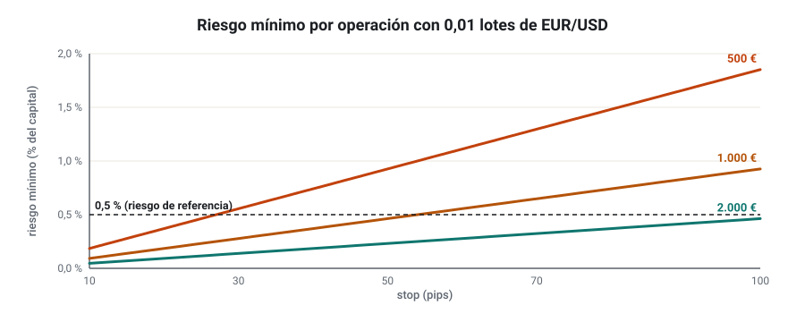
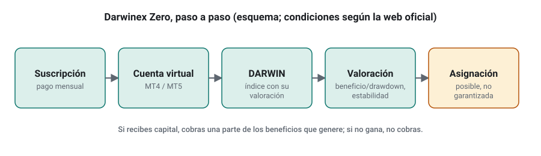
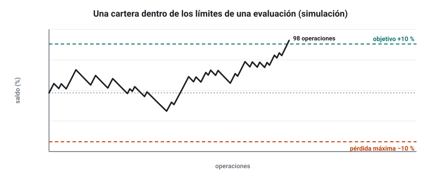
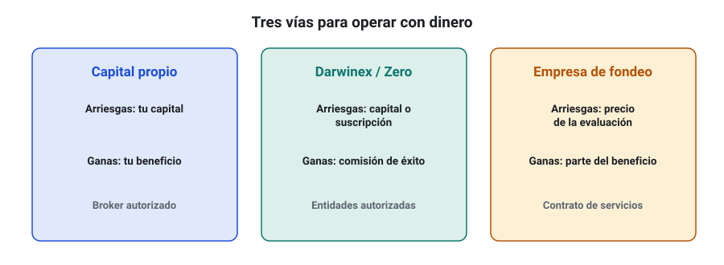

SEMANA 18 · ETAPA 5 · PROFESIONALIZACIÓN
Capital propio, Darwinex y fondeo
Presentación de la semana
Con una cartera validada e incubada, aparecen tres caminos para operar con dinero: tu capital propio, plataformas como Darwinex (con su versión Darwinex Zero) y las empresas de fondeo. Cada uno tiene ventajas, costes, riesgos y una naturaleza jurídica distinta. Esta semana los estudiarás con detalle y con números, para que puedas decidir con criterio si das el paso, cuándo y por dónde. Terminarás adaptando tu cartera a las reglas de una firma concreta.
Objetivos
Al terminar la semana sabrás:
- Empezar con 500–1.000 € de capital propio protegiéndolo y escalar solo con evidencias.
- Explicar cómo funcionan Darwinex y Darwinex Zero.
- Analizar las reglas de una empresa de fondeo y su efecto en una cartera.
- Comparar las tres vías en lo jurídico y en lo operativo.
- Adaptar tu cartera a las reglas de una firma.
Plan de la semana (22–25 horas)
| Bloque | Horas | Qué harás |
|---|---|---|
| Clases | 5 | Cinco lecciones: lectura y vídeos |
| Prácticas | 13 | Análisis de condiciones y adaptación de la cartera |
| Investigación y evaluación | 4 | Investigación I-18, entrega y examen |
| Revisión y planificación | 2 | Glosario, cuaderno y plan de la semana 19 |
Qué necesitas
- Tu cartera incubada y su plan de riesgo (semanas 14 y 16).
- Las condiciones oficiales vigentes de Darwinex o Darwinex Zero y de una empresa de fondeo. No contrates ni pagues nada para esta semana.
Criterio para desbloquear la semana 19
Tener en estado APROBADO, con un 80 % o más cada uno:
- ☐ Examen de la semana 18
- ☐ Entrega práctica: cartera adaptada a las reglas de una firma
- ☐ Investigación I-18: los ocho pasos documentados
Capital propio de 500 a 1.000 €: protegerlo y escalar con evidencias
Formato: clase de 35 minutos · Lectura: 30 minutos
El objetivo no es ganar, es medir
Con 500–1.000 €, el beneficio esperable en euros es pequeño. El objetivo de esta fase es otro: medir la ejecución real (semana 16) y comprobar que tú y tu cartera funcionáis con dinero de verdad. Por eso, el capital debe ser dinero cuya pérdida total no afecte a tu vida.
El problema del lote mínimo
Con poco capital, el lote mínimo (0,01 lotes en Forex) limita el riesgo que puedes fijar.

Soluciones: una cuenta cent (semana 16), menos estrategias a la vez o aceptar temporalmente un riesgo algo mayor, pero documentándolo.
Escalar con evidencias
Define de antemano los hitos para aumentar el capital. Ejemplo:
- 3 meses en real sin incidencias técnicas graves.
- Ejecución dentro de lo previsto: coste real ≤ coste de la hoja de evaluación.
- Resultado dentro de las bandas del Monte Carlo (no hace falta ganar mucho).
- Solo entonces, aumentar el capital en un escalón moderado (por ejemplo, ×2) y repetir.
Comprueba que lo has entendido
- ¿Cuál es el objetivo de la fase con 500–1.000 €?
- ¿Por qué el lote mínimo es un problema con poco capital?
- Escribe tus tres primeros hitos para escalar.
Darwinex y Darwinex Zero
Formato: clase de 40 minutos · Lectura: 35 minutos
Qué es Darwinex
Darwinex es la marca comercial de varias entidades reguladas. Según su web (consulta de noviembre de 2026): Tradeslide Trading Tech Ltd, autorizada por la FCA del Reino Unido; Sapiens Markets EU Sociedad de Valores SA, autorizada por la CNMV española; y Tradeslide Global Ltd, autorizada por la FSA de Seychelles. Comprueba siempre en el registro del supervisor con qué entidad contratarías (semana 1).
Su idea central: además de ser un broker, convierte la operativa de un trader en un DARWIN, un índice que replica su estrategia con un control de riesgo propio y en el que pueden invertir terceros. El trader cobra una comisión de éxito sobre los beneficios que obtienen los inversores o el capital asignado.
Darwinex Zero
Darwinex Zero permite crear un DARWIN sin depositar capital propio: pagas una suscripción mensual y operas una cuenta con capital virtual. Tu DARWIN acumula historial y recibe una valoración. Si alcanza los niveles exigidos, puede recibir asignaciones de capital del programa de la propia Darwinex (DarwinIA), y tú cobras una parte de los beneficios que ese capital genere. Según un artículo de un participante de agosto de 2026, esa parte era del 15 % y el umbral de valoración para optar a asignación, de 75; comprueba ambas cifras en las condiciones oficiales, porque cambian.

Qué valora
La valoración de un DARWIN da mucho peso a la relación entre beneficio y drawdown y a la estabilidad del riesgo, no a la rentabilidad bruta. Encaja bien con lo aprendido en el curso: carteras diversificadas, riesgo controlado y pocas sorpresas.
Ventajas e inconvenientes
| Ventajas | Inconvenientes |
|---|---|
| Entidades reguladas | Suscripción mensual (coste fijo) |
| No arriesgas capital propio en Darwinex Zero | Las asignaciones no están garantizadas |
| Historial público y verificable | La valoración tarda meses en construirse |
| Encaja con carteras de riesgo controlado | Las condiciones cambian con el tiempo |
Comprueba que lo has entendido
- ¿Qué es un DARWIN?
- ¿Qué pagas y qué arriesgas en Darwinex Zero?
- ¿Qué tipo de estrategia favorece la valoración de un DARWIN?
Empresas de fondeo: reglas firma por firma
Formato: clase de 40 minutos · Lectura: 35 minutos
El modelo
Una empresa de fondeo (prop firm) te vende una evaluación: si cumples sus objetivos sin romper sus reglas, te da acceso a una cuenta «financiada» y te paga una parte de los beneficios. En muchas de ellas, las cuentas son simuladas y los pagos se hacen con cargo a los ingresos de la empresa. El precio de la evaluación es la principal fuente de ingresos de muchas firmas.
Reglas típicas
Como ejemplo, las reglas descritas públicamente para la evaluación en dos fases de FTMO, una de las firmas más conocidas (resumen de terceros consultado en noviembre de 2026; verifícalo en la web oficial):
| Regla | Fase 1 | Fase 2 |
|---|---|---|
| Objetivo de beneficio | 10 % | 5 % |
| Pérdida diaria máxima | 5 % | 5 % |
| Pérdida total máxima | 10 % | 10 % |
| Días mínimos de operativa | 4 | 4 |
Cada firma tiene reglas distintas: pérdida máxima fija o «arrastrada» (trailing), límites diarios calculados sobre el saldo o sobre el patrimonio, reglas de consistencia (ningún día puede aportar más de un porcentaje del beneficio), restricciones en noticias o fines de semana, y condiciones para los EA (algunas prohíben ciertos tipos de estrategias automáticas o de copia).

Las reglas cambian tu estrategia
- La pérdida diaria máxima limita el riesgo abierto: con un 5 % diario, un riesgo del 2 % por operación deja margen para dos pérdidas.
- La pérdida total máxima es tu drawdown máximo absoluto: compárala con el percentil 99 del Monte Carlo de tu cartera.
- El objetivo de beneficio sin límite de tiempo favorece la paciencia; con límite de tiempo, empuja a arriesgar más, que es justo lo que suele hacer fracasar.
Cómo analizar una firma
- Lee las condiciones oficiales completas y guárdalas con fecha.
- Comprueba quién es la empresa, dónde está registrada y si aparece en las advertencias de la CNMV u otros supervisores.
- Busca reglas sobre EA, noticias, fines de semana y copia de operaciones.
- Busca opiniones con pruebas de pago verificables, desconfiando del marketing.
Comprueba que lo has entendido
- ¿De dónde salen los ingresos de muchas empresas de fondeo?
- ¿Qué regla de una evaluación limita más tu riesgo abierto?
- ¿Por qué subir el riesgo para pasar rápido suele fracasar?
Diferencias jurídicas y operativas entre las tres vías
Formato: clase de 30 minutos · Lectura: 25 minutos
| Aspecto | Capital propio | Darwinex / Darwinex Zero | Empresa de fondeo |
|---|---|---|---|
| Qué arriesgas | Tu capital | Tu capital (Darwinex) o la suscripción (Zero) | El precio de la evaluación |
| Entidad | Broker autorizado | Entidades autorizadas (FCA, CNMV…) | Normalmente no es una empresa de servicios de inversión autorizada |
| Tus operaciones | Reales | Reales o virtuales replicadas | Habitualmente simuladas |
| Lo que cobras | Tu beneficio | Comisión de éxito | Parte del beneficio, según contrato |
| Protección del inversor | La del broker (semana 1) | La de las entidades reguladas | La del contrato de servicios |
| Fiscalidad | Rendimientos de tus inversiones | Depende del tipo de ingreso | Ingreso por la prestación de un servicio (semana 19) |

Lo jurídico importa
- Con un broker o Darwinex tienes una relación de inversión con una entidad supervisada.
- Con una empresa de fondeo sueles tener un contrato de prestación de servicios: no hay protección del inversor y las condiciones las fija la empresa. Lee el contrato, en especial los motivos por los que pueden negarse a pagar.
- La fiscalidad es distinta en cada caso: lo verás en la semana 19.
Comprueba que lo has entendido
- ¿Qué arriesgas en cada vía?
- ¿Qué diferencia jurídica hay entre una empresa de fondeo y un broker autorizado?
- ¿Por qué es importante leer los motivos de denegación de pago?
Taller: adaptar la cartera a las reglas de una firma
Formato: taller guiado de 60 minutos · Práctica: 8–10 horas
Paso 1 · Elige y documenta
Elige una firma de fondeo o el programa de Darwinex Zero. Descarga o copia sus condiciones oficiales vigentes con la fecha. No contrates nada.
Paso 2 · Traduce las reglas a límites
Convierte cada regla en un límite de tu plan de riesgo (semana 14): riesgo por operación, riesgo abierto máximo, pérdida diaria, drawdown de parada, horarios prohibidos.
Paso 3 · Simula
Con el Monte Carlo de tu cartera (semana 11), calcula para tu escala de riesgo: la probabilidad de alcanzar el objetivo antes de tocar la pérdida máxima, y la probabilidad de romper la pérdida diaria en algún día.
Paso 4 · Ajusta
Busca la escala de riesgo que maximice la probabilidad de cumplir las reglas, no la de alcanzar el objetivo rápido.
Paso 5 · Decide
Escribe tu conclusión: ¿encaja tu cartera con esa firma o programa? ¿Con qué riesgo? ¿Qué te preocupa del contrato?
Comprueba que lo has entendido
- ¿Qué probabilidad tiene tu cartera de superar la evaluación con tu escala elegida?
- ¿Qué regla te limitó más?
- ¿Darías el paso? ¿Por qué?
Glosario de la semana
| Término | Inglés | Definición |
|---|---|---|
| Asignación | Allocation | Capital que una plataforma asigna a una estrategia |
| Comisión de éxito | Performance fee | Parte de los beneficios que cobra el gestor o trader |
| DARWIN | DARWIN | Índice de Darwinex que replica la estrategia de un trader con control de riesgo |
| Darwinex Zero | Darwinex Zero | Programa de Darwinex para crear un DARWIN con capital virtual mediante suscripción |
| Empresa de fondeo | Prop firm | Empresa que vende evaluaciones y paga una parte de los beneficios a quien las supera |
| Evaluación | Challenge / evaluation | Prueba con objetivos y límites para acceder a una cuenta financiada |
| Hito de escalado | Scaling milestone | Condición previa para aumentar el capital |
| Pérdida máxima arrastrada | Trailing drawdown | Límite de pérdida que sube con el máximo de la cuenta |
| Regla de consistencia | Consistency rule | Límite al peso de un solo día en el beneficio total |
Ejercicios obligatorios
E1 · Lote mínimo. Con 600 € y un riesgo del 0,5 %, ¿cuál es el stop máximo en pips que puedes usar con 0,01 lotes de EUR/USD (EUR/USD a 1,08)?
E2 · Hitos. Escribe tus hitos completos de escalado desde 500–1.000 € hasta el capital objetivo.
E3 · Darwinex. Consulta las condiciones oficiales vigentes de Darwinex Zero: precio de la suscripción, requisitos para optar a asignaciones y porcentaje de la comisión de éxito. Cita la página y la fecha.
E4 · Supervisión. Comprueba en el registro de la CNMV o de la FCA la entidad de Darwinex con la que contratarías desde tu país.
E5 · Firma. Elige una empresa de fondeo y resume sus reglas en una tabla, con la fecha de consulta.
E6 · Advertencias. Busca la empresa del E5 en la lista de advertencias de la CNMV y en la del supervisor de su país de origen. Anota el resultado.
E7 · Riesgo y evaluación. Con una pérdida diaria máxima del 5 % y una pérdida total del 10 %, ¿qué riesgo por operación máximo permitiría encadenar 8 pérdidas sin romper la pérdida total? ¿Y sin romper la diaria, si se pueden dar 3 pérdidas en un día?
E8 · Simulación. Simula 200 veces tu cartera con las reglas de la firma del E5 y calcula el porcentaje de éxitos.
E9 · Comparación. Rellena la tabla de la lección 4 con los datos concretos de las tres opciones que analizarías tú.
E10 · Decisión. Escribe en 200 palabras qué vía elegirías hoy, o por qué ninguna todavía.
Investigación I-18 y entrega práctica
Investigación I-18 · ¿Qué riesgo maximiza la probabilidad de superar una evaluación?
Paso 1 · Hipótesis. Ejemplo: «Con mi cartera, un riesgo de 0,25 % por estrategia da una probabilidad de superar la evaluación mayor que uno de 0,75 %».
Paso 2 · Fuentes. Condiciones oficiales de la firma y al menos una fuente sobre la gestión del riesgo en evaluaciones.
Paso 3 · Datos. Resultados de tu cartera (operaciones o días).
Paso 4 · Diseño. Escalas a probar, número de simulaciones, reglas que aplicarás y criterio de éxito.
Pasos 5 y 6. Simulaciones de Monte Carlo con las reglas de la firma.
Paso 7 · Comparación. Probabilidad de éxito, de romper la pérdida diaria y de romper la total para cada escala, y tiempo medio hasta el objetivo.
Paso 8 · Conclusiones. ¿Qué riesgo elegirías? ¿Qué limitaciones tiene la simulación?
Entrega práctica · Cartera adaptada a una firma
Qué entregar
| Archivo | Contenido |
|---|---|
CODIGO_S18_ENT |
Condiciones oficiales con fecha, tabla de reglas traducidas a límites, simulación y decisión razonada |
CODIGO_S18_INV |
Investigación I-18 |
| Ejercicios | E1 a E10 |
Cómo se evaluará
Se valora que las condiciones se citen de la fuente oficial con fecha, que las reglas se traduzcan correctamente a límites y que la decisión se apoye en la simulación. No se valora si decides dar el paso o no: se valora cómo lo decides.
Examen de la semana 18 · Variante A
Tiempo orientativo: 60 minutos · Puntuación: 100 puntos · Aprobado: 80 puntos · Puedes usar calculadora, pero no el material del curso ni el tutor de IA. Si suspendes, repetirás con otra variante.
Parte A · Opción múltiple (30 puntos, 2 por pregunta)
Parte B · Cálculo (45 puntos, 15 por ejercicio)
B1. Tienes 900 €. Quieres un riesgo de 0,4 % por operación con 0,01 lotes de EUR/USD (pip ≈ 0,0926 € por 0,01 lotes con el EUR/USD a 1,08). a) ¿Cuánto arriesgas en euros? b) ¿Qué stop máximo en pips puedes usar? c) Si tu estrategia usa stops de 50 pips, ¿qué riesgo real asumes?
B2. Una evaluación tiene un objetivo del 10 %, pérdida diaria máxima del 5 % y pérdida total del 10 %. Tu cartera tiene una esperanza de 0,15 R por operación y hace 4 operaciones por semana con un riesgo de 0,5 % cada una. a) ¿Cuántas operaciones necesitas de media para alcanzar el objetivo (sin composición)? b) ¿Cuántas semanas? c) ¿Cuántas pérdidas seguidas puedes encadenar antes de tocar la pérdida total?
B3. Un programa paga al trader el 15 % de los beneficios del capital asignado. Te asignan 30.000 € y la estrategia gana un 8 % en el periodo. a) ¿Cuánto cobras? b) Si la suscripción cuesta 40 € al mes durante 12 meses, ¿cuál es tu resultado neto en el año? c) ¿Qué rentabilidad del capital asignado necesitarías para cubrir solo la suscripción?
Parte C · Razonamiento (25 puntos)
En un máximo de 250 palabras: compara las tres vías (capital propio, Darwinex Zero y una empresa de fondeo) para una persona con 1.000 € y una cartera recién incubada, en cuanto a riesgo, coste, protección jurídica y encaje con lo aprendido en el curso.